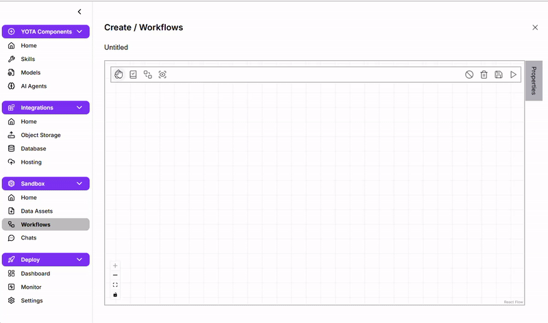
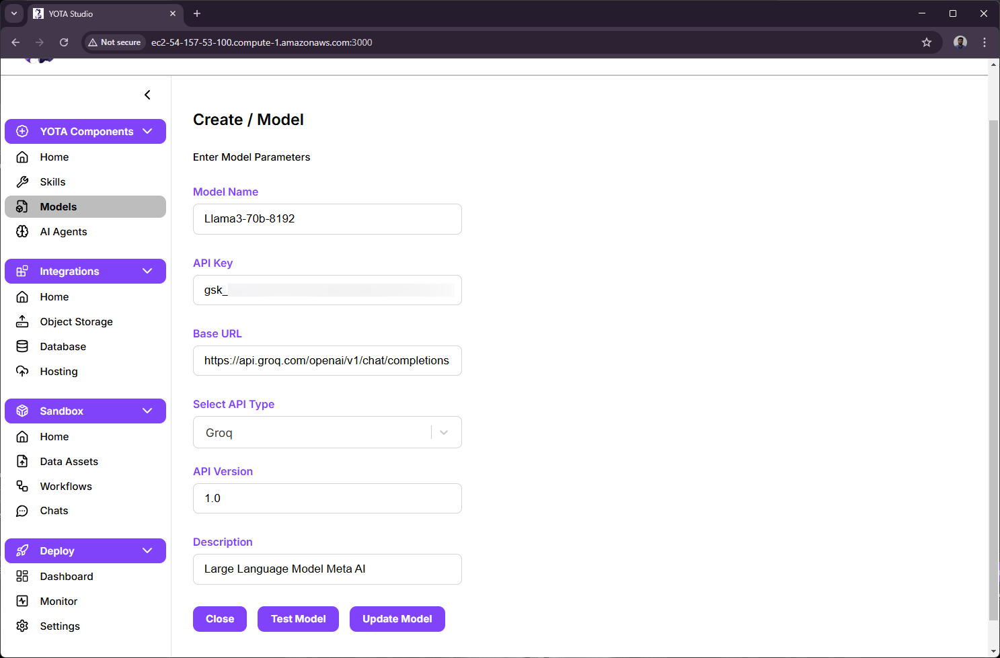
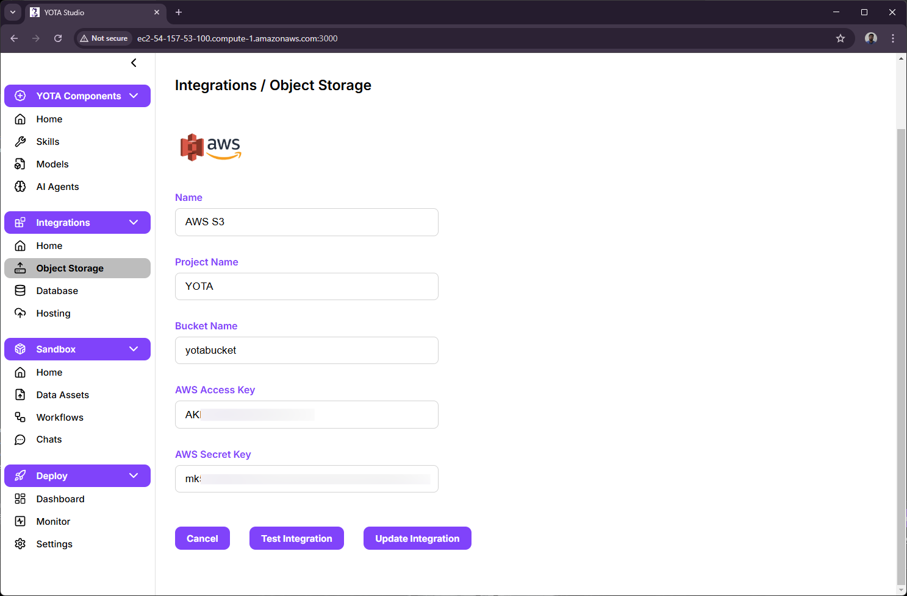
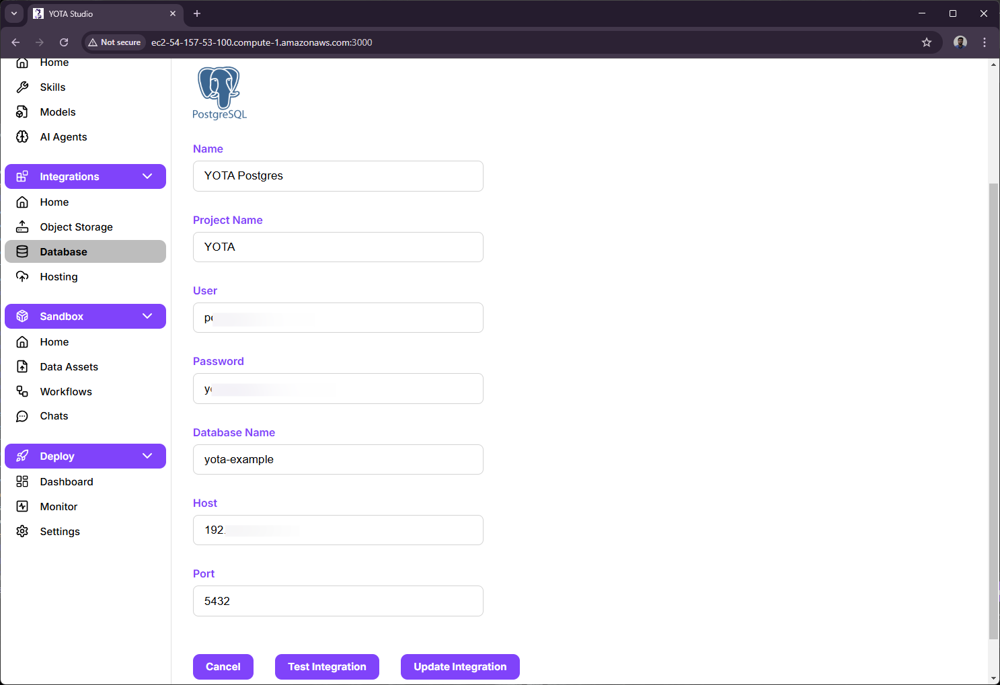

React Node.js Postgres Typescript Flask EC2
-
Reduced workflow creation time by 30% by designing a drag-and-drop builder in React using react-flow and useReducer, with react-hook-form and zod for dynamic node validation. 
-
Achieved up to 40% faster processing of user-defined workflows by building a concurrent task execution system in Flask with DFS, multithreading, and subprocess handling.

-
Built Node.js backend services for real-time SSE updates using Kafka and integrated CRUD operations across AWS S3, IBM COS, Groq, and OpenAI
- LLM Model Integration 
- Object Storage Integration 
- Database Integration 